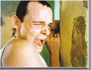
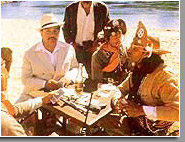

 A 1ª Mostra Paulista de Cinema Nordestino começa nesta sexta-feira e traz à Grande São Paulo filmes de ficção e documentários, em curta, média e longa metragem. A entrada é gratuita.
Os títulos serão exibidos simultaneamente em Taboão da Serra, Diadema e Guaianazes, regiões em que há grandes concentrações de nordestinos e seus descendentes.
A mostra acontecerá também no bairro de Pinheiros (zona oeste), no espaço cultural "Território Brasil", de sábado (3) a segunda-feira (5) de junho. É uma alternativa aos que não tenham tempo disponível ou condição de se deslocar a Taboão da Serra, Diadema ou Guaianazes.
Serão mais de 20 horas de filmes distribuídas entre 36 produções de diferentes Estados -- algumas premiadas em festivais no Brasil e no exterior.
Entre os títulos, destacam-se "Baile Perfumado", "Corisco e Dadá" e "Amarelo Manga", entre outras que marcaram a história do cinema do país, como o filme mudo do Ciclo do Recife "Aitaré da Praia", de 1923.
O evento contará também com performances do cineasta pernambucano Hermano Figueiredo, conhecido por exibir filmes em "telas não-convencionais", como redes de dormir, velas de jangada e barrigas de vaca.
Confira a programação:
TABOÃO DA SERRA
Na Escola Municipal de Ensino Fundamental Professor Francisco Ferreira Paes (r. José Pedro Nogueira Filho, 210, Jardim Mituzi)
Sexta-feira (2)
às 16h
- Performance Hermano Figueiredo com exibição de curtas-metragens nordestinos em rede de dormir
- A Árvore da Miséria, de Marcus Vilar (PB)
- Hip Hop com Dendê, de Fabíola Aquino e Lílian Machado (BA)
- Retoque Final, de Marcelo Pedroso (PE)
- Biodiversidade, Daniel Bandeira e Juliano Dornelles (PE)
às 20h
- Theodorico Imperador do Sertão, de Eduardo Coutinho (RJ/RN)
- Performance Hermano Figueiredo com exibição de curtas-metragens nordestinos em rede de dormir
- Baile Perfumado, de Paulo Caldas e Lírio Ferreira (PE)
Sábado (3)
às 16h
- Caso Norte, João Batista de Andrade (SP/PE)
- No Fiel da Balança, de Francisco Colombo (MA)
- O Rap do Pequeno Príncipe Contra as Almas Sebosas, de Paulo Caldas e Marcelo Luna (PE)
às 20h
- Leviatã, de Camilo Cavalcante (PE)
- Eletrodoméstica, de Kleber Mendonça Filho (PE)
- Corisco e Dadá, de Rosemberg Cariry (CE)
Domingo (4)
às 16h
- A Árvore da Miséria, de Marcus Vilar (PB)
- Hip Hop com Dendê, de Fabíola Aquino e Lílian Machado (BA)
- Retoque Final, de Marcelo Pedroso (PE)
- Biodiversidade, de Daniel Bandeira e Juliano Dornellas (PE)
- A Moça e o Rapaz Valente, de Simião Martiniano (PE)
às 20h
- 29 Polegadas, de Bernard Attal e Joselito Crispim (BA)
- Rapsódia para um Homem Comum, de Camilo Cavalcante (PE)
- Amarelo Manga, de Cláudio Assis (PE)
DIADEMA
No Centro Cultural de Diadema (r. Graciosa, 300, Praça da Moça)
Sexta-feira (2)
às 19h
- Corisco e Dadá, de Rosemberg Cariry (CE)
Sábado (3)
às 15h
- Biodiversidade, de Daniel Bandeira e Juliano Dornelles (PE)
- A Árvore da Miséria, de Marcus Vilar (PB)
- O Som da Luz do Trovão, de Petrônio Lorena e Tiago Scorza (PE)
- Maracatu Maracatus, de Marcelo Gomes (PE)
às 19h
- Bom te Ver, de Francisco Colombo (MA)
- O Pedido, de Adelina Pontual (PE)
- Amarelo Manga, de Cláudio Assis (PE)
Domingo (4)
às 15h
- No Fiel da Balança, de Francisco Colombo (MA)
- São Luis Caleidoscópio, de Hermano Figueiredo (MA)
- Leviatã, de Camilo Cavalcante (PE)
- Simião Martiniano, o Camelô do Cinema, de Clara Angélica (PE)
às 18h30
- Performance de Hermano Figueiredo com exibição de curtas-metragens nordestinos em rede de dormir
- Hip-Hop com Dendê, de Fabíola Aquino e Lilian Machado (BA)
- O Rap do Pequeno Príncipe Contra as Almas Sebosas, de Paulo Caldas e Marcelo Luna (PE)
GUAIANAZES
No Centro de Educação Unificada Jambeiro (av. José Pinheiro Borges, 60)
Sexta-feira (2)
às 17h30
- A Árvore da Miséria, de Marcus Vilar (PB)
- Maracatu, Maracatus, de Marcelo Gomes (PE)
- Hip Hop com Dendê, de Fabíola Aquino e Lílian Machado (BA)
- Filme de Ação, de Diogo Almeida (PE)
- Biodiversidade, de Daniel Bandeira e Juliano Dornelles (PE)
às 19h30
- 29 Polegadas, de Bernard Attal e Joselito Crispim (BA)
- Rap do Pequeno Príncipe Contra as Almas Sebosas, de Paulo Caldas e Marcelo Luna (PE)
Sábado (3)
às 18h
- Performance de Hermano Figueiredo com exibição de curtas-metragens nordestinos em rede de dormir
- Ave Maria ou Mãe dos Oprimidos, de Camilo Cavalcante (PE)
- Mandinga em Manhatan, de Lázaro Faria (BA)
Domingo (4)
às 18h
- Boi e Tambores do Maranhão, de Gregório Bacic (SP/MA)
- Eletrodoméstica, de Kléber Mendonça Filho (PE)
- Baile Perfumado, de Paulo Caldas e Lírio Ferreira (PE)
PINHEIROS
Espaço Cultural Território Brasil (r. Mateus Grou, 580, Pinheiros)
Sábado (3)
às 17h
- Recife de Dentro pra Fora, de Kátia Mesel (PE)
- Aitaré da Praia, de Gentil Roiz (PE)
às 19h30
- Bois e Tambores do Maranhão, Gregório Bacic (SP/MA)
- Corisco e Dadá, de Rosemberg Cariry (CE)
Domingo (4)
às 17h
- Ave Maria, ou Mãe dos Oprimidos, de Camilo Cavalcante (PE)
- Rap do Pequeno Príncipe Contra as Almas Sebosas, de Paulo Caldas e Marcelo Luna (PE)
às 19h30
- A Canga, de Marcus Vilar e Durval Leal Filho (PB)
- Lua Cambará, de Rosemberg Cariry (CE)
Segunda (5)
às 20h
- Performance de Hermano Figueiredo com exibição, em rede de dormir, do filme "Jornal do Sertão", de Geraldo Sarno (PB)
- Theodorico, Imperador do Sertão, de Eduardo Coutinho (RN/RJ)
- Debate com a professora da PUC-SP e documentarista Verônica Dias.